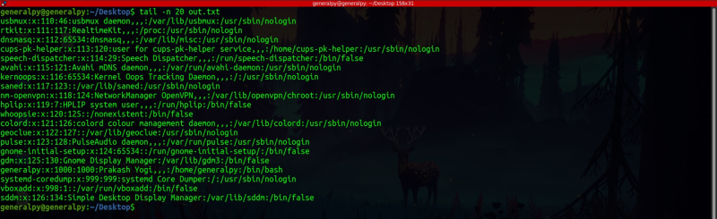

Viewing files
To view files in linux we can either use graphical editors like gedit, emacs etc but usually most of the work in linux is done on terminal so learning terminal file viewing commands is important.
One of the most used file viewing commands is cat command. It simply prints all of the contents of the file. To run cat, you just have to provide it name of the file you want to print contents of. We can also supply multiple files.
cat <file(s)>
We can add a -n flag to also print line numbers.
cat directly prints file's contents and it doesn't provide any navigation so it is recommended to use cat only on small files.
cat is short for concatenate. This command can also be used to add contents of multiple files and throw it into a single file. To do this we have to use > redirection operator which redirects contents of standard input and put them into a file specified after this operator. Note that file contents previously present will be removed.
cat file1...filen > output_file
More on redirection operators later.
less command is used to show contents of files in a pagged manner not all contents at once. This come in handy while reading large files. Man page by default uses less to show man pages.
less file_nameWe can use g to move to top or G to move to end of file. Ctrl + F to move forward and Ctrl + B to move backward. q to quit less page. /<word> to forward search for word or ?<word> for backward search. n to move forward in search and N to move backward in search. Use arrow keys or scroll wheel to move up and down the page.
tail command is used to print contents of file from the end. By default it prints last 10 lines of the file.
tail file_nameWe can configure how many lines tail will print by using -n flag.
tail -n <number_of_lines> file_name
If we want to print last lines of a file starting from a specific line we can use -n for that too.
tail -n +<begin_line_number> file_nameHere we printed last lines of file starting from line number 10.

We can read a file in realtime by using -f flag. It will read last lines of file in realtime and will update data when data in file is changed.
tail -f <file_name>We used tail to read contents of auth.log file which stores logs of all login attempts. We entered wrong password to see log update in realtime. Press Ctrl + C to close tail page.
head command is like complement of tail and print top lines of a file.
head <file_name>First 10 lines are printed. Some flags are same as tail.
watch command is used to run a command every n seconds. It is generally used to see difference between successive runs of commands.
By default commands run every 2 seconds which we can change using -n flag.
To see difference in successive runs use -d flag.